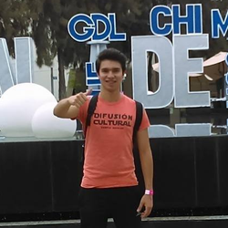
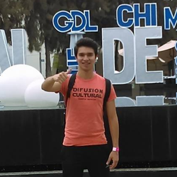
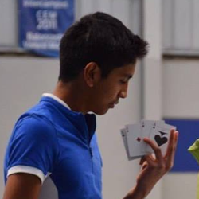
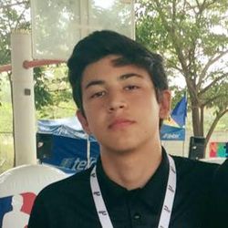

Santiago Uría Ramírez
A01273706
22 de Agosto
El 22 de agosto se empezó a realizar el contrato empezando con los integrantes del equipo, el nombre del equipo y la temática que esta llevará, acordando fechas de que día se hará cada actividad y cuando se debe de entregar.
23 de Agosto
El 23 de agosto el secretario, líder y critico hicieron en contrato de “acta de compromiso” y cuando se finalizo fue firmada por todos los integrantes del equipo.
29 de Agosto
El día 29 de agosto se investigaron los varios términos de montañas rusas y softwares de diseño elegido este por el tecnólogo. También se hizo el bosquejo de las montañas rusas individualmente y al final se seleccionó una, para que esa fuera la original.
30 de Agosto
El día 30 de agosto se hizo el boceto original, con los colores que debería de llevar la montaña rusa, echa a mano por el líder y el secretario y fue mandado al correo del profesor.
5 de Septiembre
El 5 de septiembre se hizo un problema simulando la velocidad que tendría la montaña en una de las bajadas y fue dejado de tarea la entrega del boceto en 3D de la montaña rusa para el día domingo.
9 de Septiembre
El día 9 de septiembre se hizo el diseño 3D y fue mandado al profesor.
12 de Septiembre
El día 12 de septiembre fue dejado de tarea la página en formato html para que sea entregada el di 16 de septiembre y será echa los días 13, 14 y 15 de septiembre.
Santiago Uría Ramírez
A01273706
Marco Antonio Vásquez Millones
A01273672
José Luis Ruiz Cobran
A01375710
